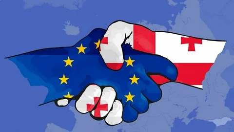

საქართველოს შესახებ
საქართველო-ევროკავშირის ურთიერთობები — წარმოადგენს ურთიერთობებს ევროპის კავშირსა და საქართველოს შორის, რომელიც დაიწყო 1991-1992 წლებში, მაშინ როდესაც საქართველომ დაიბრუნა დამოუკიდებლობა საბჭოთა კავშირის დაშლის შემდეგ.[1] საქართველო დამოუკიდებლობის აღდგენის დღიდან მიზნად ისახავს ევროკავშირში ინტეგრაციას. დამოუკიდებლობის მოპოვებას მოჰყვა ღრმა კრიზისი ქვეყანაში, რადგან ქვეყანამ, რომელიც აქამდე მთლიანად დამოკიდებული იყო საბჭოთა კავშირზე, დაკარგა ეკონომიკური ბაზრები, კავშირები, რასაც ემატებოდა ქვეყანაში მიმდინარე შიდა კონფლიქტები, პოლიტიკური არასტაბილურობა, სოციალური სიდუხჭირე და მრავალი სხვა ფაქტორი. მას შემდეგ, რაც შემცირდა საქართველოს მთავარი შიდა პროდუქტი(მშპ), ევროკავშირი მეტად გააქტიურდა და დიდი მხარდაჭერა გაუწია სხვადასხვა პროგრამებისა თუ პროექტების მეშვეობით. მთავარ მიზნად ისახავდა დემოკრატიული პრინციპების დამკვიდრებას, საბაზრო ეკონომიკის განვითარებასა და საქართველოს თანამედროვე სახელმწიფოდ ქცევას. 1999 წლიდან 2004 წლამდე ევროკავშირმა სამი ძირითადი დახმარება გაუწია ქვეყანას, ეს იყო: ჰუმანიტარული, ფინანსური და თექნიკური სფეროები. ამ პერიოდში ევროკავშირმა დახარჯა მილიარდ დოლარზე მეტი. 2004 წლისთვის ევროკავშირის ძალისხმევით უკვე შეინიშნებოდა ეკონომიკური სიმყარე, შესაბამისად, ჰუმანიტარული დახმარების მისია უკვე შესრულებული იყო. ჰუმანიტარული დახმარება გულისხმობდა მოწყვლადი ჯგუფების უზრუნველყოფას საკვებით, მედიკამენტებითა თუ სხვა დამხმარე საშუალებებით. აღნიშნული საკითხები განიხილებოდა 1994 წლის ბუდაპეშტის სამიტსა და 1996 წლის ლისაბონის სამიტზე. ამჟამად, საქართველო ევროკავშირისგან იღებს მრავალმხრივ მხარდაჭერას, როგორც ფინანსურად, ასევე განათლების კუთხით. ის დღემდე დიდ როლს თამაშობს პოლიტიკური მხარდაჭერის საკითხშიც, რათა საქართველომ შეინარჩუნოს დამოუკიდებლობა და სუვერენიტეტი, დარჩეს დემოკრატიული პრინციპების ერთგული და ასევე, ინტეგრირდეს საერთაშორისო საზოგადოებაში.[2] ევროკავშირი ყოველწლიურად გამოყოფს 100 მილიონ ევროზე მეტს საქართველოში სხვადასხვა პროექტების განსახორციელებლად. ეს პროექტები მოიცავს სხვადასხვა სფეროს და მათი მიზანია ქვეყანაში განათლების სისტემისა და ეკონომიკური განვითარება, ენერგეტიკა და წყალმომარაგება, უსაფრთხოება და, რაც ყველაზე მნიშვნელოვანია, ადამიანის უფლებების დაცვა, რისი მიზანიც საბოლოოდ არის ის, რომ საქართველო იყოს ნამდვილი ევროპული სახელმწიფო და მისი განუყოფელი ნაწილი.[3]
საქართველოს ბუნების ძეგლები — საქართველოს დაცული ტერიტორიები — ეროვნული მნიშვნელობის მქონე შედარებით მცირე ტერიტორიები, სადაც წარმოდგენილია იშვიათი, უნიკალური და მაღალი ესთეტიკური მახასიათებლების მქონე კომპაქტური ეკოსისტემები, ცალკეული გეომორფოლოგიური და ჰიდროლოგიური წარმონაქმნები, მცენარეთა ცალკეული ეგზემპლარები ან ცოცხალ~ ორგანიზმთა ნამარხი ობიექტები. ბუნების ძეგლი შეიძლება იყოს მღვიმე, ხეობა, მდინარის დელტა სხვა.[1]
საქართველოს ტერიტორიაზე უძველესი დროიდან ადამიანთა ცხოვრების ფაქტს ადასტურებს დმანისში ჩატარებული არქეოლოგიური გათხრები. დმანისში აღმოჩენილი ადამიანის ჩონჩხის ფრაგმენტები უძველესია მთელს ევრაზიაში, რომლის ასაკი 1 800 000 წელია. ქართველების პირველი პოლიტიკური გაერთიანება დიაოხი და კოლხა მდინარე ჭოროხის აუზში ძვ. წ. II ათასაწლეულის ბოლოს შეიქმნა, მათ მხოლოდ რამდენიმე საუკუნე იარსებეს. ისინი დაამხეს ჩრდილოეთიდან შემოჭრილმა მომთაბარე ტომებმა. ძვ. წ. VI საუკუნეში ჩამოყალიბდა ეგრისის ანუ კოლხეთის სამეფო. იგი თითქმის მთლიანად აერთიანებდა დღევანდელ დასავლეთ საქართველოს. ძვ. წ. IV საუკუნეში აღმოსავლეთ საქართველოში შეიქმნა იბერიის სამეფო. სწორედ იბერიის მეფეს ფარნავაზს უკავშირდება ქართული დამწერლობის შექმნა. ძველი წელთაღრიცხვის ბოლოს რომის იმპერიამ დაიპყრო ეგრისის სამეფო, ქართლის სამეფო ჯერ რომის ვასალია, ხოლო მისი დასუსტების შემდეგ, სპარსეთის გავლენის ქვეშ ექცევა. დასავლეთ საქართველოს ტერიტორიაზე ოთხი სამთავრო ჩამოყალიბდა: ლაზების, აფშილების, აბაზგებისა და სანიგების. განსაკუთრებით გაძლიერდა ლაზთა სამთავრო, რომელმაც თავის გავლენას დაუქვემდებარა დანარჩენი სამი და შეიქმნა ახალი სახელმწიფო - ლაზიკა.
1981 წლის მონაცემებით საქართველოში 4500 სოფელი იყო. ოკუპირებული სოფლების გამოკლებით საქართველოში 3668 სოფელია.